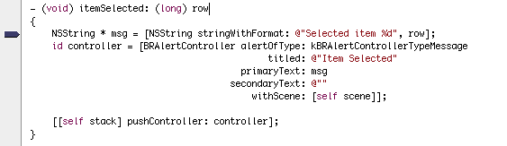
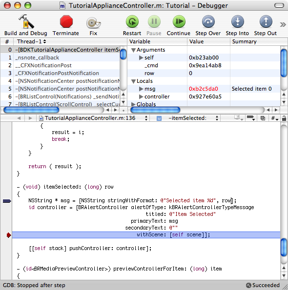
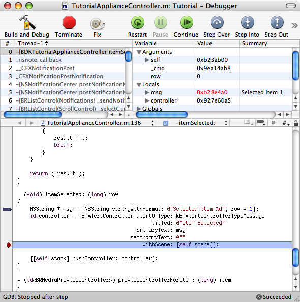

Step 5: Debugging and Fixing
The first place to look for the error is in the -itemSelected: method of the BDKApplianceController class, so open ApplianceController.m and click in the space to the left of the first line in that method, as shown here:

The breakpoint set at the start of the function.
Now we will start the application in the debugger, by clicking and holding on the Build & Go button, and selecting Build & Debug from the menu that pops up. The debugger window will open, and the BackRow Test application will launch and begin to show the intro movie. Press Menu or Escape here and you will see your appliance once again.
Select the first item in the list, and the debugger will hit our breakpoint. Take one step and you can see it create the message string, with the wrong value:

The value for the msg variable is incorrect here.
The error is on that first line: Our items are named starting at index 1, but the array starts at index 0. Therefore, we need to change the first line to read like the following:
NSString * msg = [NSString stringWithFormat: @"Selected item %d", row + 1];
Now we can try this out immediately, using the Fix & Continue feature of Xcode, available in Debug builds.
Save the file.
On the toolbar in the debugger window, click the Fix button.
Drag the red arrow representing the current location up to the first line again (to the same position as the breakpoint).
Take one step, and look at the new value for the msg variable, as shown below

The corrected msg variable.
At this point, if you press the Continue button, you will see the message appear in the BackRow window, this time showing the correct item number. Disable the breakpoint in the debugger (click on the breakpoint marker or drag it off the left edge of the window) and try selecting other menu items. These all display the correct values now.